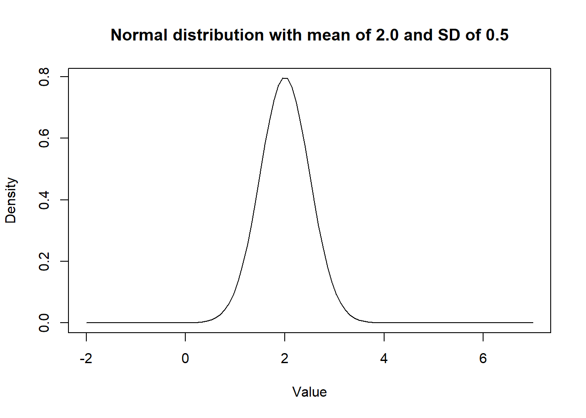
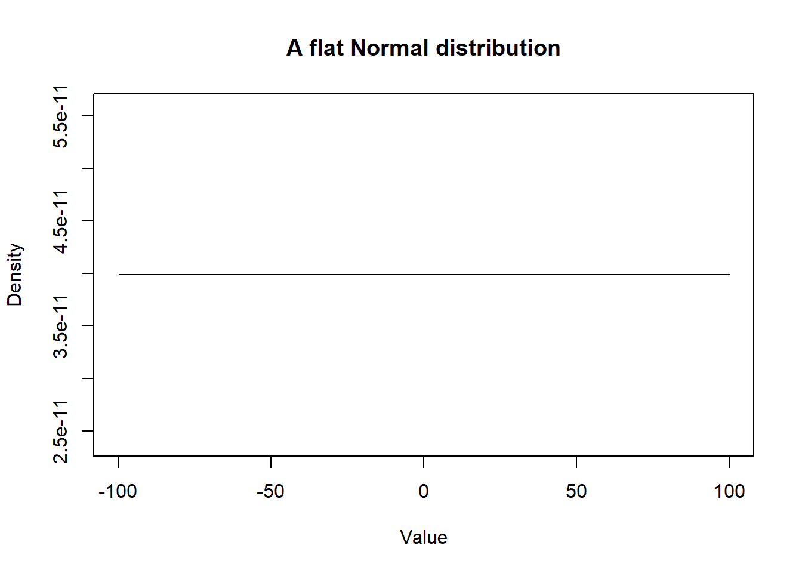
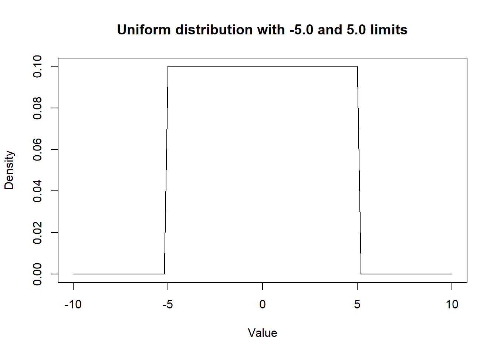
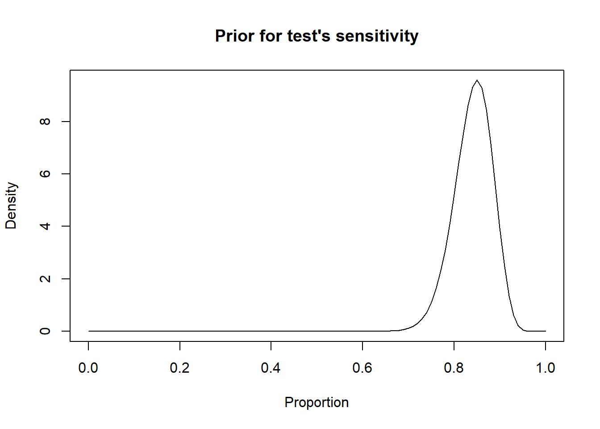
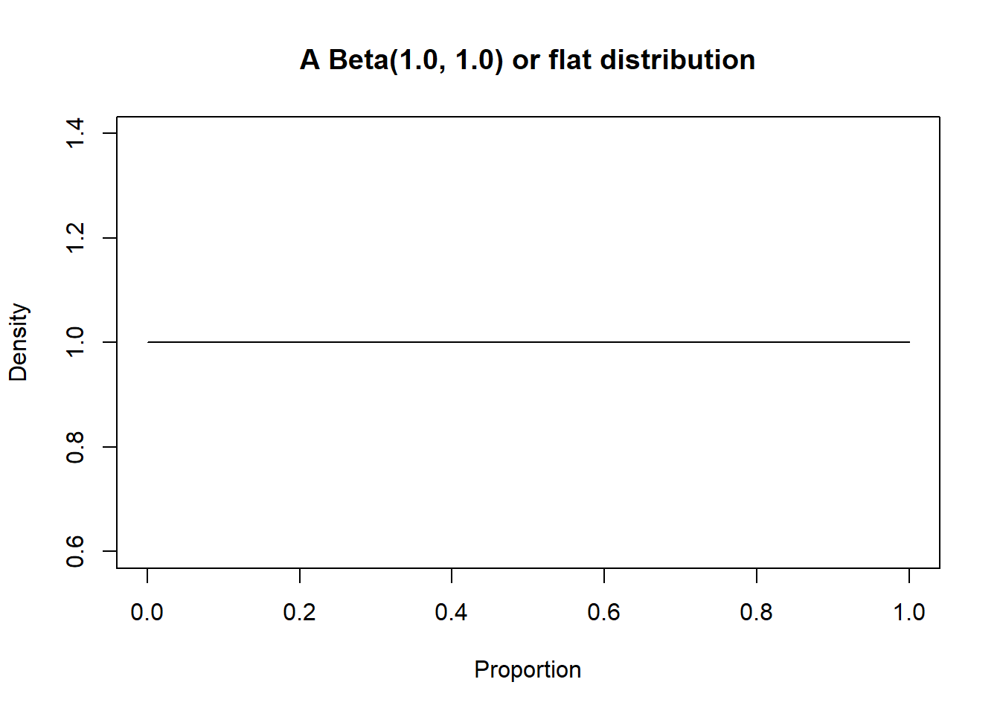

Chapter 2 Distributions
When using latent class models (LCM) to estimate disease prevalence or diagnostic test accuracy, we will need to use various distributions. There are two situations where we will use distributions:
- as prior distributions to describe our a priori knowledge on a given unknown parameter.
- as a part of the likelihood function that will be used to link observed data with unknown parameters.
Some distributions will more often be used for the first objective, others will mainly be used for the latter objective. In the following sections, we will cover the most useful distributions.
2.1 Prior distributions
One of the first things that we will need for any Bayesian analysis is a way to generate and visualize a prior distribution corresponding to some scientific knowledge that we have about an unknown parameter. Generally, we will use information such as the mean and variance or the mode and the 2.5th (or 97.5th) percentile to find a corresponding distribution. Here we present three of the most important distributions. We will give more details on each of them in the following sections:
- Normal distribution: defined by a mean (mu) and its standard deviation (SD) or variance (tau). In some R packages and software, rjags and JAGS for instance, the inverse of the variance (1/tau) is used to specify a given normal distribution.
Notation: dNorm(mu, 1/tau)
- Uniform distribution: defined by a minimum (min) and maximum (max).
Notation: dUnif(min, max)
- Beta distribution: bounded between 0 and 1, beta distributions are defined by two shape parameters (a) and (b).
Notation: dBeta(a, b)
2.1.1 Normal distribution
The dnorm() function can be used to generate a given Normal distribution and the curve() function can be used to visualize the generated distribution. These functions are already part of basic R functions, there is no need to upload a R package.
curve(dnorm(x,
mean=2.0,
sd=0.5), # We indicate mean and SD of the distribution
from=-2, to=7, # We indicate limits for the plot
main="Normal distribution with mean of 2.0 and SD of 0.5", # Adding a title
xlab = "Value",
ylab = "Density") # Adding titles for axes
Figure 2.1: Density curve of a Normal distribution.
Note that a Normal distribution with mean of zero and a very large SD provides very little information. Such distribution would be referred to as uniform or flat distribution (A.K.A.; a vague distribution).
curve(dnorm(x,
mean=0.0,
sd=10000000000),
from=-100, to=100,
main="A flat Normal distribution",
xlab = "Value",
ylab = "Density") 
Figure 2.2: Density curve of a flat Normal distribution.
2.1.2 Uniform distribution
In the same manner, we could visualize a uniform distribution using the dunif() function. In the following example, we assumed that any values between -5.0 and 5.0 are equally probable.
curve(dunif(x,
min=-5.0,
max=5.0),
from=-10, to=10,
main="Uniform distribution with -5.0 and 5.0 limits",
xlab = "Value",
ylab = "Density") 
Figure 2.3: Density curve of a Uniform distribution.
2.1.3 Beta distribution
Beta distributions are another type of distributions that will specifically be used for parameters that are proportions (i.e., bounded between 0.0 and 1.0). For this specific workshop, they will be very handy, since sensitivity, specificity, and prevalence are all proportions. Beta distributions are defined by two shape parameters (a) and (b), but these parameters have no direct interpretation, as compared for instance, to the normal distribution where the first parameter is the mean and the second parameter is a measure of the variance (e.g., the standard deviation, the variance, or the inverse of the variance, depending on the software used). Nonetheless, the a and b parameters of a beta distribution are also related to the mean and the spread of this distribution, but as follows:
\(a = mu*psi\)
\(b = psi*(1-mu)\)
Where mu is the mean of the distribution and psi is a factor that controls the spread of the distribution. Moreover, psi is also the sum of the a and b parameters of the beta distribution:
\(psi = a+b\)
From the above equations, we could also deduct that the mean of a beta distribution, mu, can be computed as:
\(mu = a/(a+b)\)
Given that there is not direct interpretation of the a and b parameters of a beta distribution, it is easier to rely on a software to find the a and b parameters that will correspond to a desired distribution with a certain mode (or mean) and variance. The epi.betabuster() function from the epiR library can be used to define a given prior distribution based on previous knowledge. When we use the epi.betabuster() function, it creates a new R object containing different elements. Among these, one element will be named shape1 and another shape2. These correspond to the a and b shape parameters of the corresponding beta distribution.
For instance, we may know that the most likely value for the sensitivity of a given test is 0.85 and that we are 97.5% certain that it is greater than 0.75. With these values, we will be able to find the a and b shape parameters of the corresponding beta distribution.
Within the epi.betabuster() function, the imsure= argument will be important to indicate whether the next argument x=0.75 describe the:
- 2.5th percentile (imsure="greater than") or the
- 97.5th percentile (imsure="less than").
Typically, when the mode of a distribution is <50% we suggest to use the 97.5th percentile to describe the spread of the distribution. When the mode is >50% we suggest to use the 2.5th percentile.
library(epiR)
# Sensitivity of a test as Mode=0.85, and we are 97.5% sure >0.75
rval <- epi.betabuster(mode=0.85, # We create a new object named rval
conf=0.975,
imsure="greater than",
x=0.75)
rval$shape1 #View the a shape parameter in rval## [1] 62.661## [1] 11.88135#plot the prior distribution
curve(dbeta(x,
shape1=rval$shape1,
shape2=rval$shape2),
from=0, to=1,
main="Prior for test's sensitivity",
xlab = "Proportion",
ylab = "Density")
Figure 2.4: Density curve of a Beta distribution for a test sensitivity.
Note that a dBeta(1.0, 1.0) is a uniform beta distribution.
#plot the prior distribution
curve(dbeta(x,
shape1=1.0,
shape2=1.0),
from=0, to=1,
main="A Beta(1.0, 1.0) or flat distribution",
xlab = "Proportion",
ylab = "Density")
Figure 2.5: Density curve of a Beta(1.0, 1.0) distribution.
2.2 Distributions for likelihood functions
In many situations, a distribution will be used as a part of the likelihood function to link observed data to unknown parameters. The ones we will most frequently use are:
- Binomial distribution: For variables that can take the value 0 or 1. Binomial distributions are defined by the probability (P) that the variable takes the value 1 and a number of “trials” (n).
Notation: dBin(P, n)
- Multinomial distribution: For qualitative variables that can take more than 2 values. We can use the multinomial distribution to represent multiple probabilities, all bounded between 0 and 1, and that together will add up to 1. Multinomial distributions are defined by k probabilities (P1, P2, …, Pk) and the number of observations (n).
Notation: dmulti(P[1:k], n)
2.2.1 Binomial distribution
If we have a variable that can take only two values, healthy or diseased (0 or 1), we can estimate an unknown parameter such as the proportion (P) of diseased individuals (i.e., the disease prevalence), based on the observed data (a number of positive individuals (T) AND a total number of individuals (n)). For instance, if we had 30 diseased (T = 30) out of 100 tested individuals (n = 100) we could estimate the unknown parameter P using this very simple likelihood function:
\(T \sim dbin(P, n)\)
2.2.2 Multinomial distribution
A last type of distribution that we will use in our LCM is the multinomial distribution. When an outcome is categorical with >2 categories, we could use a multinomial distribution to describe the probability that an individual has the value “A”, or “B”, or “C”, etc. In our context, the main application of this distribution will be for describing the combined results of two (or more than two) diagnostic tests. For instance, if we cross-tabulate the results of Test A and Test B, we have four potential outcomes:
-Test A+ and Test B+ (lets call n1 the number of individuals with that combination of tests results and P1 the probability of falling in that cell)
-Test A+ and Test B- (n2 and P2)
-Test A- and Test B+ (n3 and P3)
-Test A- and Test B- (n4 and P4)
We can illustrate this as follow:
| Test A+ | Test A- | |
|---|---|---|
| Test B+ | n1 | n3 |
| Test B- | n2 | n4 |
Thus we could describe the probabilities (P1 to P4) of an individual falling into one of these cells of the 2x2 table as a multinomial distribution. In this specific case, we would say that the combined results of the 2 tests (n1 to n4) and the total number of individual tested (n), which are the observed data, are linked to the 4 probabilities (P1 to P4; the unknown parameters) as follows:
\(n[1:4] \sim dmulti(P[1:4], n)\)
Which means: the value of n1 (or n2, n3, or n4) is determined by the probability of falling into the “Test A+ and Test B+” cell, which is P1 (or P2, P3, or P4 for the other cells), and by the total number of individuals tested (n). Nothing too surprising here… If I have a probability of 0.30 to fall in a given cell, and I have tested 100 individuals, I should find 30 individuals in that cell. Wow! Still, the multinomial distribution is nice because it will ensure that all our probabilities (P1 to P4) will sum up to exactly 1.0.